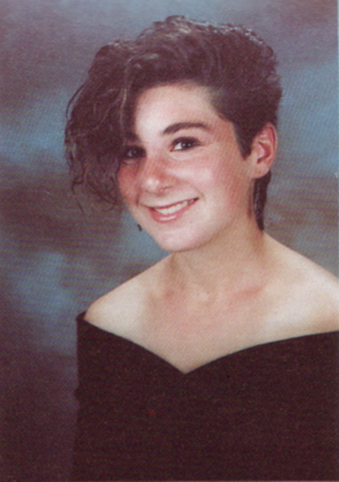
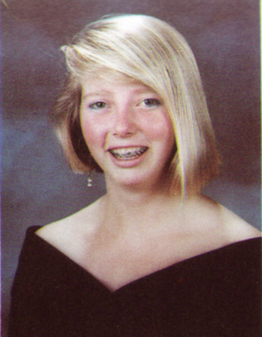

I'll be busy on the 13th playing trumpet in the pit orchestra for the play Beauty and the Beast in a community playhouse, the best part being that my younger son will have a bit part in the show. I'm just ending 10 days of vacation, and a trip to CA would be difficult.
What I was doing in high school?
In high school, I was involved in music (a lot), hanging with friends, photogaphy, telegraph Ave pizza, café roma, working weekends in construction and landscaping, feeling teenage angst, and not really enjoying academics.
What I'm doing now?
Now I'm a full time carpenter/contractor living in the beautiful seaside town of Rockport, MA with my wife and two boys, 10 and 13. The area is full of artists and musicians, as well as wealthy folks who always have great projects that keep me busy working.
What would surprise you?
I don't think I have any surprises up my sleeve, except that I surprise myself with being way more into history, science, math, and languages as an adult than I ever was as a kid.
What I'm looking forward to at our Reunion?
Love seeing all these pics and stories, and I look forward to seeing pics from the reunion.
Kai Bansner
What I was doing in high school?
Suffering thru core classes so I could enjoy great electives like: photography, basic programming, pottery and year book. My best memories are these: I loved talking to other students in the print drying room of the photo lab about how they made their amazing pictures. I laughed the most while erecting clay pots on the wheel, and throwing clay at friends erecting taller pots. Taking pictures for the yearbook was a gift; it was a perfectly valid excuse riding the bus with the girls volleyball team on away games.
What I'm doing now?
I bike to work at a lingerie company in San Francisco. I'm a web developer for a very attractive site, trueandco.com. We normalize sizing differences in bras and make fit recommendations based on a woman's fit quiz answers and purchases.
What would surprise you?
If you see an old guy with a pink cockatoo on a bicycle in the mission district, it’s me.
What I'm looking forward to at our Reunion?
Checking in on how folks are aging. Talking with people I barely remember. Hearing old stories of things I’ve forgotten about. Making new friendships. Getting really really wasted. And the balloon drop at the end at the end of the evening. (Definitely not dancing.)
Shanti Blanton (Corrigan)
After sleeping on the steps outside UC Berkeley's Sproul Building in 1985 with fellow yellow jackets to urge campus to divest from apartheid I now find myself working in that very building! As my friend says now "I am the man." Glad to see and make friends next week!
Mark Brown
Where will I be on August 13th?
So many questions.... On August 13 I'll be at my 30th high school reunion.
What I was doing in high school?
In high school I was busy with reading and writing and some other stuff.
What I'm doing now?
Now I'm still busy with reading and writing and other stuff. (I live in Davis and teach in the government department at Sacramento State.)
What would surprise me?
If I knew it wouldn't be a surprise, but I'm certainly looking forward to seeing everyone.
Peter Burns
On August 13th I will be at the BHS c/o 86 30-Year Reunion Dinner and Dance at Hs. Lordships on the Berkeley Marina fully recovered from the Friday Night Mixer and looking forward to a possible After Party (consider that an 'Easter Egg').
In highschool I was avoiding math and science, doing creative writing assignments last minute and getting A- or B+'s to offset my science and math grades. I was also looking at girls and joking with my buddies.
I am a filmmaker and media dude. Supporting my kids passions are my priorities. Traveling is another passion.
What would surprise you is that I am a shark hunter. I have been chasing sharks for 3 years with a group based in Australia. While I've never caught one, I am exhilarated by the hunt.
What I am looking forward to is networking to develop a new shark hunting group in based in the Bay Area.
Sylvia Delgado
I live in the Bay Area and wouldn't have it any other way! I did however, live abroad for two years.
I am a hospital administrator for Children's Hospital in Oakland.
I love spending time with family and friends and enjoy the outdoors. I realize I am a total beach bum! I enjoy hosting parties, like to cook, and have a passion for decorating and shopping!
I am currently an empty nester and really looking forward to traveling the world and seeing new places with my husband and two daughters. I attended our 10 year reunion, missed the 20th, but so excited to reconnect with classmates at our 30th!
Anne Divenye
Where will I be on August 13th?
I will be on the North Shore of Boston on August 13.
What I was doing in high school?
Funny thing is that even in Massachusetts I still feel more at home on the northern half of my state - once NorCal always NorCal. My years in high school were a delicate balancing act of nights of rebellion at Ruthie's Inn with my thrash metal compadres and meeting the minimum academic requirements to keep me on the honor role.
What I'm doing now?
I have gone on to become an architect and am now working on the Owner's side for a university in Cambridge. Sorry to miss the reunion for the second time. For our 20th I was 8 1/2 months pregnant so couldn't fly across country. Have fun everyone!
March Marisa Flores
Where will I be on August 13th?
On Aug. 13th, I will be @ the 30th Reunion hanging out w/ my homies!!
What I was doing in high school?
I was doing Dance Production, makeup for plays/musicals in the PAD dept, typesetting for our newspaper...
What would surprise you?
What would surprise you maybe is I started working at the age of 12, all thru high school...
Peter Fredman
Where will I be on August 13th?
Unfortunately, I fly out of town the morning of August 13 with kids — I did not grog the reunion when I made the plans.
What I was doing in high school?
At BHS I was a stoned dumbass, alas, and still am now. Also a plaintiffs class action lawyer, in Berkeley, two young kids (much better weed) (joke! NSA joking here)

Grace Gilbert
Where will I be on August 13th?
August 13th I'll be at the reunion with Jean Lozano!
What I was doing in high school?
In high school I was just getting through and having ice cream at Edy's with Kristina. Moved to Israel right after senior year ended.
What I'm doing now?
Now I live in Danville. Formerly a lawyer working in non-profits representing children with disabilities. Now I teach 4th grade Hebrew school. I have a 17 year old daughter (just spend 3 weeks looking at colleges for her, which makes me feel SO old!), and a 14 year old son.
Shannon Goldman-Schubert
Where will I be on August 13th?
Carpooling dancers on my daughter's team (one of their minis just became a team member on Dance Moms - from Boulder?? Really??? Wow, times have changed around here.)
What I was doing in high school?
Apparently, I was taking really bad senior portraits!
What would surprise you?
What would surprise you: Been living in Colorado for most of the last 30 years, inadvertently.
What I'm looking forward to at our Reunion?
All a y'all having a hella good time. (By the way, I recently looked up the etiology of "hella" and it is generally agreed that its birthplace is either B'town or Oakland.)
Gideon Goldman
Where will I be on August 13th?
I will be at a rehearsal for a good friend's wedding.
What I was doing in high school?
Going to Blondies, Top Dog, the Rose Garden, a few parties but not many, hanging out with a pretty small group of good friends.
What I'm doing now?
Raising a 3-month old boy, teaching at BHS (year #12 coming up), playing saxophone, spending lots of time with family & friends, feeling really lucky to live here & have a solid community.
What would surprise you?
Trump winning, jazz becoming popular.
What I'm looking forward to at our Reunion?
Hearing as many people's stories as possible in the small time I'm going to have there (due to the wedding I mentioned). I hope people show up to whatever is happening on Friday!
Barney Greinke
Where will I be on August 13th?
August 13 I'll be in LA for work. Bounced back to Berkeley after a few years at UCSB and living overseas (Prague). Still frequenting Top Dog and King Pin "on the late night tip."
Halverson, Aniko (Coco)
What I was doing in high school?
I was walking around with blue hair, pontificating with the likes of Rachel Stevens and Jennifer Holmes. I escaped to KALX to do my weekly show.
What I'm doing now?
Now I live in London where I am a library manager at University of Westminster.
What would surprise you?
I'm sure that nothing would surprise the likes of you world-weary and experienced souls. I won't be at the reunion, I already visited Berkeley this summer for a pilgrimage to eat at Top Dog, thank you very much.
Shelley Hayden
Where will I be on August 13th?
Dancing with my classmates to DJ CJ Flash!
What I was doing in high school?
Painting my nails in class, working at Toyota of Berkeley as a switchboard operator, doing the minimum to get into a UC school, working as a class officer with all of my friends, working on yearbook, being one of those annoying school spirit types, breaking some hearts because I had no clue how to let a guy down with honor, driving an AMC Hornet (I can't believe I'm admitting that), wearing matching hot pink and turquoise outfits every day of the week, drinking beer on the weekends and going out to clubs in SF with my older boyfriend (scandal!)
What I'm doing now?
Running a media business, living a location free life for the next 6 months (SF Bay, Tahoe, Baja) after 4 years in Raleigh, NC (after years living in Berkeley and traveling the world for my fashion business), spending as much time as possible hiking in the woods with my Labrador Cody or at the beach, visiting my parents in Baja every spring, working way too much, trying to keep up with my friends around the globe and planning this reunion for y'all!
What would surprise you?
I did my first triathlon for my 40th birthday with 20 friends in Las Vegas and was filmed for an NBC sports special (I couldn't make that up if I tried!) Took everyone out for a night of VIP partying Las Vegas style on a Limo bus powered by biodiesel after our race. Officiated my God sister's wedding in Alaska summer 2015...just call me Minister Shelley!
What I'm looking forward to at our Reunion?
Appreciating you all...I didn't even know how good I had it back then. You are some of the most interesting and special people I've ever met in my adventures around the globe. I want to celebrate you and see you enjoying catching up with all of your friends and making new ones. Dancing...yes...dancing...there will be lots of dancing!
Kiyomi Hiramoto
Where will I be on August 13th?
At the reunion, of course!
What I was doing in high school?
Just trying to make it day to day
What I'm doing now?
IT consulting for biotechnology companies
What would surprise you?
I've been married for almost 24 years and still haven't lived more than 10 miles from the house I grew up in.
Jennifer Holmes
Where will I be on August 13th?
I'll come if I find something ridiculous to wear.
What I was doing in high school?
Ignoring the fact that I was a teenager. I did a pretty good job.
What I'm doing now?
Event producer, non/profit hack, single mom, revolutionary.
What would surprise you?
I'm more of an anarchist now than I was in high school.
What I'm looking forward to at our Reunion?
Hearing about the good in the world Berkeley kids have done.
Suzanne Iwase
What I was doing in high school?
I was all over the place at BHS, spent more time at Oh-go-get-laid café, smoking, partying and basically getting into trouble but somehow kept up my grades and theatre roles. Loved the drama crowd!
What I'm doing now?
I am now living far away from Berkeley in the South of France but it isn't that different here (just French). I run a property-management business for anglophones.
What would surprise you?
What might surprise you is that I was elected onto the village council in 2014 so I'm very committed to "my people". As a foreigner (Japanese, American, and British) I have been very lucky to be accepted into this little but gorgeous Provençale village. I have two girls (12 and 8 yrs) and a French hubby who's a ski-freak and a great Dad. We grow our own vegetables and drink loads of rosé wine.
What would surprise you?
I wish I could attend the reunion but, alas, too many commitments here for now. Would have loved to dance to the wee hours and laugh my ass off with everyone. I'll get to the 40th though, promise!
What I'm looking forward to at our Reunion?
I would also like to hook up with Lucy Anderton as she lives about 3 or 4 hours away from me. Loved BHS - I believe I was very lucky to have gone do such a diverse, cool, stimulating, fun school with excellent teachers. Hope some of you can visit my area of France! xx Susana
Felicia Jones
Where will I be on August 13th?
Not sure where I will be in the 13th.
What I was doing in high school?
The only thing I did in high school was general academic studies.
What I'm doing now?
Now I'm a graduate of Merritt working on getting my BA and a law degree.
What would surprise you?
What would surprise you is I'm a mother of 3 daughters, 2 stepdaughters, 1 stepson but having my first grandchild in December and it's going to be a boy!
Whitney Jourdan
Where will I be on August 13th?
At the reunion of course!!!!! :)
What I was doing in high school?
On the gymnastics team, trying to stay out of trouble and get out of high school!! :o
What I'm doing now?
I've been working for the State of California for 21 years; currently as onsite IT support for the Dept of Social Services
What would surprise you?
I married the same man (the father of my son) twice!! LOL
What I'm looking forward to at our Reunion?
Reconnecting with old friends and hopefully finding new friends!
Rohana Kenin
Where will I be on August 13th?
Spending the weekend on Long Island shore with creative team of the digital comedy series I co-wrote/produced/star in www.47SecretsToAYoungerYou.com and celebrating one of their birthdays. Would love it if you all would watch and tell me what you think of season 1.
What I was doing in high school?
Too much! Heavy class load, class officer some years, pompon squad senior year, working 20 hours a week at the UC Theater, anti-nuke activism and hanging out with all my buddies at the Rocky Horror Picture Show. What I'm doing now: Living in Brooklyn with my actor husband and two actor kids. Working on various creative and performing projects. Classical music administration within a university setting.
What would surprise you?
No idea! I feel none of us were very good at getting to know people outside of our small circles in high school so I have no idea what people thought of me (if at all) then. What surprises me? I live in Brooklyn, I'm not making my living as an actor, my back keeps going out just because I slept wrong. Ha ha
What I'm looking forward to at our Reunion?
Seeing pix since I can't be there. Loving the updates I've been seeing in this group so far.
Brandy Martin
Where will I be on August 13th?
Hi Peeps! On August 13 I will be in my home in Encinitas, CA. We just moved here from Orange County and COULDN'T BE HAPPIER! This was my town before B-Town and am so excited to be back here again with my boyfriend, Keith. Between my work schedule and our move, it makes it difficult to get the time off to see everyone - but I am SOO looking forward to seeing pictures and posts!
What I'm doing now?
I've been a Graphic Designer for 18 years and have been lucky enough to be given the opportunity to work from home with my job. A one-in-a-million offer and I feel so grateful to have this opportunity. This gives me more opportunity to be at the beach or hiking amazing trails or cooking. I've been vegan for the last 6 years and LOVE IT. I've always loved to cook, so we are always creating vegan dishes from scratch and hoping some day we can open a small vegan cafe of our own in our hood ;o)
What would surprise you?
Life is always surprising me, and I never thought I'd be the happiest I ever have been at age 48!
What I'm looking forward to at our Reunion?
Have fun at the reunion and I'm really going to miss a good time! Take lots of pictures!!! xoxoxo Brandy
Miriam Metzger
Where will I be on August 13th?
I am living in Holland this year with my family, and traveling for 2 months this summer so I will not be at the reunion.
What I'm doing now?
When not in Europe, I live in Santa Barbara where I am a professor at UCSB. I teach there and conduct research on social aspects of information technology.
What I'm looking forward to at our Reunion?
Sorry to miss the reunion. Hi to all!
Amanda Miller
Where will I be on August 13th?
I have had so much fun reading everyone's updates! I am so sorry that I will be missing the reunion, but I live far, far away now.
What I'm doing now?
I have been in Bangalore, India, for the past 9 years with my husband and 7-year-old daughter. I am an art consultant specializing in Indian and other Asian art. Despite some challenges of living in a developing nation, we very much enjoy our life here. I will probably end up back in the Bay Area some day. Perhaps for the 40th!
Alicea Nellis
I moved to Berkeley the summer before 9th grade from a relatively homogenous suburban town. I took the bus to West Campus that first day where the shy girl that was me, was met with incredible diversity, girls kissing girls, piercings, combat boots, a green mohawk (or was it blue?) and my life was forever changed for the better. Even though I was painfully shy and probably didn’t know many of you well, my time at Berkeley High was undoubtedly one of the most pivotal of my life and I have carried it with me wherever I have gone since.
I might have been swallowed up by the overwhelmingness of it all if it hadn’t been for Shelley Hayden convincing Mr. Scrofani that she had to sit with me because she couldn’t tolerate sitting alone. (He had some sort of seating assignments and my seat happened to be closest to hers). Her friendship is still a blessing to me 30+ years later.
Since high school I have lived quite a few places, most notably central Appalachia, in the heart of coal mining, tobacco farming and preaching country. Now I am blessed to live on beautiful Cape Cod with my husband and 3 children (ages 11, 9 and 7) and am a stay at home mom though somewhere in there I graduated medical school, traveled the world, learned how to ski in my 40s after spending a year (maybe 2) on the bunny slope, and sang a solo live on stage thereby liberating myself from one of my greatest fears.
I cannot wait to be back in Berkeley attending not just the August 13 reunion event but also the other great events organized by our amazing reunion committee. I am looking forward to seeing old friends and hopefully getting to know better some of the most interesting, smart, open minded, creative and socially conscious people on the planet.
Naomi Nishimoto
Where will I be on August 13th?
I will be attending our reunion with my good friend Marie Cadiz - woo hoo!
What I was doing in high school?
Just trying to pass math - ugh!
What I'm doing now?
I live in Belmont with my husband and two kids (13 and 11). Ran for school board twice (still can't believe I did this!). I'm a Landscape Architect at a multi-discipline firm in Redwood City, working along side with my husband who's an Architect.
Katie Orenstein
Where will I be on August 13th?
In NYC
What I was doing in high school?
Mostly swimming but also some shenanigans with Megan OKeefe and Brandy Martin
What I'm doing now?
I founded and run a media nonprofit calledThe OpEd Project (the mission is to diversify the range of voice we hear in the world)
What would surprise you?
Well I'm still a weirdo so not much
What I'm looking forward to at our Reunion?
Seeing the memory book!
David Park
I will be back in B-Town on the 13th!
What I'm doing now?
Living in DC now with my partner Clarence and my dog Violet. Working in education (who knew?). Love to travel - and really can't wait to see everyone :)
Andrea Phillips
Where will I be on August 13th?
Attending the reunion
What I was doing in high school?
Hanging out with Karen Jeffries and Crystla King White
What I'm doing now?
Enjoying life with my family and friends. Of course…I am still best friends with Karen Jeffries :-)
What I'm looking forward to at our Reunion?
I cannot wait to see everyone!
Katie Pittel
Where will I be on August 13th?
Hi Everyone, I'm sad I can't make it to the reunion. I would have loved to reconnect with so many of you. On August 13th I'll be celebrating my husband's birthday with our family in Acton, MA, where I live. (That might surprise someone).
What I was doing in high school?
In high school I stayed under the radar, played cello, hung out with friends, and cut a lot of classes.
What I'm doing now?
Now I am a clinical psychologist with a practice in Concord, MA, married, and mom to two wonderful kids (Maya, 12, and Dylan, 8). I look forward to hearing all about the reunion from those who go. (Editing to include that at BHS I was Katie Pittel. I went back to using Caitlin in college, and later added a married name, Stark. Those who know Game of Thrones will understand what an interesting twist that has been).
Alison Price
Where will I be on August 13th?
I won't be able to join you on the 13th. I am sad to miss having the opportunity to see old friends and make new ones. I'll be driving with my husband Matthew and our 2 sons to North Devon in England for a week of (very cold) surfing. No trips to Berkeley in the rest of 2016. Like several of our friends from the Class of '86 I live outside the US, in Wimbledon, London, UK.
What I was doing in high school?
I went to 4 different high schools including BHS junior and senior years, a private school in Oakland and two schools in Europe. Although I had friends from Grizzly Peak School, Longfellow and Head Royce at BHS, I felt a bit of an outsider. No sports or clubs to speak of although Kristina Raven, Vanessa Morrison and I ran the Key Club!
What I'm doing now?
I have lived in London and been married for 19 years, with two sons who are 15 and 13. I worked at Sotheby's auction house in NYC, and in London as a 19th century furniture specialist. Despite being a rabid feminist I have surprised myself by becoming a stay-at-home mom. I feel very lucky to be where I am in life. I feel so lucky to be from Berkeley. I've brought the Berkeley ethos to wherever I have lived and felt stronger because of it.
Anjali Ranadive
Where will I be on August 13th?
At our reunion dancing it up!
What I was doing in high school?
Dance production, science nerd
What I'm doing now?
Running my own consulting business combining forensic science and law and teaching group fitness
What would surprise you?
I recently relocated to South Dakota (I swore I would never be landlocked, never say never!)
What I'm looking forward to at our Reunion?
Remedying the failure to connect (in HS) with so many amazing well rounded interesting accomplished FUN people who share my upbringing (you can take the girl out of Berkeley but you can't take the Berkeley out of the girl)
Kristina Raven
Where will I be on August 13th?
I will be in Sweden with family on August 13.
What I was doing in high school?
In high school, I did "rambunctious" rather well.
What I'm doing now?
Right now I am living in Berlin and work with tech startups.
What would surprise you?
You might be surprised to know that I change countries as much as some people change winter coats, but I have basically never changed my hair-do.

Kirsten Rekdahl
Where will I be on August 13th?
I will be at the reunion on the 13th and looking forward to it!
What I was doing in high school?
In HS, being on the water polo team helped me get thru. That and photography. Spent many hours in the photography dark room and the yearbook dark room.
What I'm doing now?
Currently I live in Oakland with my husband and two children (ages 13 and 11). I work as a supervisor in Social Services (in adoptions).
What would surprise you?
I live a simple yet fulfilling life with my family, pets, and extended family, so I don't think there is much surprising there. I still swim but no more water polo for me, now I get my adrenaline rush from mountain biking. So fun!
What I'm looking forward to at our Reunion?
I'm looking forward to seeing folks that I haven't seen in years and hearing about who they are now.
Christopher Reynolds
Where will I be on August 13th?
I will definitely be attending all 3 days of Reunion activities.
What I was doing in high school?
Anything and everything!! I answered Phones in the Counseling offices in the B building of B.H. with Ms. Perry and Mr. Kaneko and the other counselors and secretaries. Worked in the concession stand (or snack Bar) for our at home basketball games in the Donahue Gym
What I'm doing now?
For the past 20 some odd years, I've been working for W.C.C.U.S.D. (The West Contra Costa Unified school District) as a SIGN LANGUAGE INTRPRETER FOR THE DEAF. (and every other possible job that nobody else wanted Recess Duty, Lunch Duty, and school handy man)
And 7 years before that, with B.U.S.D. (The Berkeley Unified School District)
Currently, I'm going back to school, and I am a FULL TIME student at Ohlone College in Fremont CA. I am taking classes in NEWS BROADCASTING and PRODUCTION, and hope to be interning this coming fall at one of our local Bay Area News Station.
What would surprise you?
Beats the Hell outta me, Good question. (excuse my french).
What I'm looking forward to at our Reunion?
Seeing all of the warm, bright, familiar faces of the class of '86. (most of whom I have not seen since our last reunion or since high school)
And seeing "How Gracefully" everyone has aged. (haha)
Eric Rosenberg
Where will I be on August 13th?
BHS 1986 30th Reunion!
What I was doing in high school?
Hanging out in the quad, skipping french class, playing rugby
What I'm doing now?
Loving life in Seattle area
What would surprise you?
A parade of our old teachers showing up at the reunion
What I'm looking forward to at our Reunion?
That parade! Plus catching up with old friends ;)
Ed Rosenheimer
Very recent shot of me with my daughter on a family trip to China. I live in Alameda and work in downtown Berkeley at a company doing finance related software.
Rachel Rudnick
Alive and well in the PNW! Here I am, with one of my favourite drinking buddies! Have fun everybody!
Landi Saifer
Where will I be on August 13th?
Unfortunately I will not be at reunion this year. I will be recovering from our annual vacation and prepping to testify at trial as an expert in my field for the first time. I can tell you, I'm terrified.
What I'm doing now?
I received my doctorate more than 20 years ago and have been an I/O Psychologist since then. I live in San Diego with my husband and 5 year old son who manages to surprise me every day.
Riva Simmons
Where will I be on August 13th?
On August 13th I will be mingling with my wonderful eclectic classmates!
What I'm doing now?
I am a mother and work as a Forensic Psychiatric Specialist.
What I'm looking forward to at our Reunion?
Looking forward to reuniting with classmates and hitting the dance floor.
Theresa Simmons
Where will I be on August 13th?
Oh my goodness! Lol. I'll be hanging with my family in SOCAL on the 13th, I know you all will have a blast.
What I'm doing now?
I'm now Theresa Lashley, retired from the US Air Force and working as a management analyst. I have 3 awesome kids +a dog named Zurich.
John Sparks
What I was doing in high school?
Back at BHS I was making movies with Smiling Banana Productions, acting in shows, and hanging out with one of the gangs that came to be known as The Fellas. Since then I've worked as a teacher, tutor, writer, and writing coach, but have never gotten over the love of filmmaking I discovered back in the day.
What I'm doing now?
In 2013 I finally quit saying "who needs film school?" and enrolled at the Seattle Film Institute. I earned my MFA in Filmmaking and Producing last year, then moved back to Portland to make the feature film I've been developing for several years. Portland is where I'll be on the 13th, but I wish you all a terrific time, and am looking forward to some rad, icy, and hecka-fresh anecdotes from the reunion.
Theresa Squire
Where will I be on August 13th?
We will be on the last weekend of a month long family/work vacation in Ithica, NY. (originally it was a bike trip from Toronto to Montreal, my husbands family trip, but then work to good to pas up called).
What I was doing in high school?
I did a lot of dance and danced in a youth company in SF, All City Dance Theater Ensemble.
What I'm doing now?
I live in Brooklyn with my husband (director/actor/writer) and my 5 year old daughter. I am a costume designer and a pilates instructor. We plan to see the world by bike... Last summer the three of us biked from Brooklyn, NY to Fargo, ND. (2500 miles) Next summer Ecuador.
What would surprise you?
I live in NYC and have for 20 plus years... not much surprises me.
Henry Tasto
Where will I be on August 13th?
On August 13 I'll be in Central America hopefully scoring warm water waves and trying to get back in shape.
What I was doing in high school?
In high school I was primarily focused on going to college.
What I'm doing now?
In spite of worrying about college, I'm now a firefighter in San Francisco.
What I'm looking forward to at our Reunion?
I'm bummed that I'll be missing the reunion, but I wish everyone well and plan on attending the 40th.
Tandeeka Torrence
Where will I be on August 13th?
Celebrating with you all at the reunion dinner. I’ll be coming with Johanna (Arnold) Hernandez, one of my HS besties!
What I was doing in high school?
Kicking it with my 3 closest friends: Johanna Arnold, Ericka Baker and Amy Muckleroy. Sadly, Ericka and Amy have passed, so only two of our foursome remain.
What I'm doing now?
I’m a copywriter and editorial manager. I’ve worked in-house for several big-name retailers, but this past May I decided to go freelance and I’m loving it!
What would surprise you?
My children’s ages range from 8 to 27! Same husband. We met in ’86, not long after graduation.
What I'm looking forward to at our Reunion?
Seeing everyone. I didn’t make the 10th or 20th, so this is my first ever reunion!
Ellie Trainor
Where will I be on August 13th?
Won't be at the reunion, my son is having surgery.
What I was doing in high school?
Volleyball.. Sea Scouts.. And goofing off.
What I'm doing now?
Superior Court Clerk in Sonora in the beautiful Mother Lode, and being a mom first and foremost to two amazing young men 😘
What would surprise you?
Not much thanks to my job.....
Carmen Traylor
Where will I be on August 13th?
On August 13th I will be at the reunion!! I was singing in high school and I am still singing (performing & teaching).
What I'm looking forward to at our Reunion?
I'm looking forward to performing a fiery song with Brian Butler on the night of our 30th Reunion!
Holly Turner
Where will I be on August 13th?
At the reunion!
What I was doing in high school?
Trying to figure out where I fit in, floating around in the courtyard during lunch. Rowed on crew team a year or so, and doing anything I could find that had to do with horses. Nearly didn't graduate, but I got my rear in gear at the very end.
What I'm doing now?
Now I run a biotech lab in Emeryville and have a 3 year old son!
What would surprise you?
I bought a one way ticket to Bangkok the fall of 1986 and rode a motorcycle all around Malaysia. Guess I've settled down a little since then. ;)
What I'm looking forward to at our Reunion?
Seeing people and hearing all the stories. It's amazing how our lives have unfolded in so many unexpected ways.
Anton Walker
What I was doing in high school?
In HS,I WAS DOING TO MUCH.
What I'm doing now?
I'm still doing to much...
What I'm looking forward to at our Reunion?
Looking forward to seeing healthy loving adults..
Laura Whittemore
Where will I be on August 13th?
On 8/13 I'll be at home in Portland OR madly packing boxes for a move to a new home.
What I was doing in high school?
In high school I was trying to study, meet boys, go to the best bands at the Greek, be cool, and hang with friends. Lots of good memories from those days.
What I'm doing now?
Today I'm a copy editor, and I go through a manuscript with a fine-toothed comb looking for all those abused and misused words and punctuation marks.
What would surprise you?
Oh I'm probably just about the same nature lover and movie geek that I always was. My musical interests halted at about 1989, though I do enjoy bluegrass ala Nickel Creek. I got married...that surprised me and may surprise you, but marriage wasn't really a topic back in the day.
What I'm looking forward to at our Reunion?
I wish I could attend the reunion, but it's not in the cards this time. I look forward to the pictures, though! And please forgive any typos because this screen is tiny and I have old eyes. Bye!
Cynthia Woo
Where will I be on August 13th?
I plan to be at our reunion on 8/13.
What I was doing in high school?
During high school, I was off campus more than on campus....Having too much fun😶
What I'm doing now?
I am now working in a community based job in the city I grew up in.
What would surprise you?
I don't know what would surprise me. I don't surprise easily.
What I'm looking forward to at our Reunion?
I'm looking forward to seeing a group of people who I hope are content, compassionate, healthy as can be, and who take life one moment at a time😊
Philip Yee
Where will I be on August 13th?
Attending the 30th reunion
What I was doing in high school?
Spending way too much time trying to play tennis, eating lunch on the brick wall on the path to the G and H buildings (just had to google those building names) with my bunch of misfit guy friends
What I'm doing now?
Working at Jackson's Hardware in San Rafael, CA, been in the hardware business last 15 years. Have a son who is almost 18 months old, enjoy taking him hiking, dabble at times in Japanese woodworking and home improvement
What I'm looking forward to at our Reunion?
See old faces I haven't seen in a while.
Kirsten Hardzog
Where will I be on August 13th?
I'll be at the reunion dinner with as many of you as possible.
What I was doing in high school?
Mostly cutting school and trying to stay out of real trouble. I was fairly lost. Honestly, those years are a blur to me.
What I'm doing now?
I'm a SAHM to twin girls. I live in the PNW with them, my husband, and our pets. I fill in as a sub in my girls' school in the office and volunteer there often. The quieter life in the NW is a great fit for me, I'm pretty sure I couldn't hack it in the city anymore.
What would surprise you?
Probably what I wrote above.
What I'm looking forward to at our Reunion?
I can't wait to catch up with you all. We haven't been to Berkeley in a few years, so it'll be fun to drag our girls around to various old haunts and I'm really looking forward to a Hot Link at Top Dog!
Frantascia Price
Where will I be on August 13th?
I will be dancing my big old 48 year old tush off at Hs Lordships, hopefully with an amaretto sour or 12 in tow!
What I was doing in high school?
Honestly, I think that I spent more time off campus than I did on campus (LOL)! Other than hanging out on the community theater steps with a Marlboro in hand with the "Opie Crew" (a.k.a. Windy Franklin, Joanna Leonard and "Chickie" an' nem), trying to figure out who I was and making pulllllenty of mistakes while doing so.....don't ask how I got into U.C. Berkeley.....that was a fluke!
What I'm doing now?
I am living in Oakland and I work in San Francisco as a Financial Systems Analyst and Oracle "guru" at a company where I have been working for the past 19 years. I am raising my beautiful 15 year old daughter who is starting her junior year at an Oakland high school. I am surprised that I am not getting all of my BHS antics back through her. She's a pretty awesome kid! :)
What would surprise you?
The fact that I have not picked up a cigarette in 20 years and the offspring may be the only surprises, but that's about it!
What I'm looking forward to at our Reunion?
I am looking forward to seeing folks that I have not seen in 30 years and many people that I have known since Cragmont and Columbus and King and knowing that we all have made it and we are pretty cool adults (because the middle age years can be more of a hot mess than our teen years!) and that we're still here!
Noah Guynn
What I was doing in high school?
Trying to pretend I wasn't gay (and drinking). What I'm doing now: Trying to fight off age and infirmity (and failing).
What I'm looking forward to at our Reunion?
Celebrating the one alma mater of which I am truly proud.
Jerina Smith
Where will I be on August 13th?
I will be in Berkeley on the 13th, and I really can't wait to see everyone and have a ball.
What I'm doing now?
I'm living in Yardley, Pa, a suburb of Philadelphia with my boyfriend Paul, Tina the turtle, and Nikki the cat. I work in New York City as a Journeyman Wirewoman for local union #3(electrician).
Tanya Chilcote
Where will I be on August 13th?
At the reunion!
What I was doing in high school?
Not going to class.....
What I'm doing now?
Managing a research lab at UC Davis, living in Vallejo, FINALLY finishing my Bachelors Degree!
What would surprise you?
I row on a whaleboat racing team
What I'm looking forward to at our Reunion?
Catching up
Shanti Dorfman
Where will I be on August 13th?
With the most amazing classmates ever whom I wish I had spent more time getting to know 30 years ago.
What I was doing in high school?
Trying to get through any given day without cutting a single class.
What I'm doing now?
Working, living, laughing, loving and not taking anything or anyone for granted. Life is precious and short.